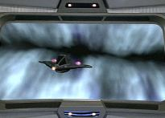
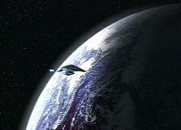
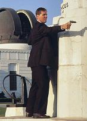
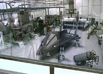
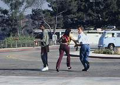
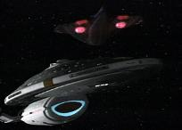
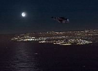

|
MANCHETE
DO EPISDIO
Voyager volta para casa em "viagem"
espao-temporal de Braga
Episódio
anterior | Prximo
episódio
Sinopse:
Data
Estelar: desconhecida
 A
nave temporal Aeon da Federao, comandada pelo capitão Braxton,
viaja por uma fenda espacial para destruir a USS Voyager. O viajante
afirma que a nave de Janeway responsável por uma exploso que
acabar com o Sistema Solar da Terra no sculo 29. Embora equipada
apenas com tecnologia do sculo 24, a tripulao consegue
defletir o ataque de Braxton e danifica a Aeon, mas ambas as naves so
puxadas para dentro da fenda. A Voyager vai parar em rbita da
à Terra, em 1996.
Sabendo que a nave de Braxton a
chave para voltar a sua própria era, a tripulao comea a
procur-la, e um grupo avanado se transporta para Los Angeles a
fim de investigar leituras subespaciais que no parecem pertencer
ao sculo 20. Enquanto isso, no Observatrio Griffith em Hollywood
Hills, a astrnoma Rain Robinson detecta as emisses de dobra da
Voyager em seus
instrumentos, relatando a descoberta ao gnio da computao Henry
Starling, que financia o laboratrio. Contrariando as instrues
de Starling, Rain transmite uma saudao nave, e a tripulao
focaliza suas coordenadas no laboratrio. Enquanto Paris e Tuvok se
dirigem ao local, Chakotay e Janeway identificam um mendigo como
sendo o capitão Braxton. Ele explica que emergiu da fenda em 1967 e
fez um pouso forado no deserto, onde o então jovem Henry Starling
encontrou a nave temporal e a utilizou para construir um imprio de
alta tecnologia. Starling agora planeja usar a Aeon para viajar ao
futuro, e, segundo Braxton, essa a causa da exploso no sculo
29.
 Temendo
que Rain seja um risco de segurana, Starling envia um capanga para
mat-la. Mas Paris e Tuvok conseguem impedir que ela seja ferida.
Quando a astrnoma os questiona sobre o que está acontecendo,
Paris diz a elas que so agentes secretos rastreando uma operao
de espionagem da KGB sovitica. Ela percebe que uma tentativa de
engan-la pois a Unio Sovitica j está extinta há anos.
Chakotay e Janeway entram
sorrateiramente no escritrio de Starling, onde descobrem a nave
temporal pouco tempo antes de ele chegar para confront-los.
Janeway alerta Starling para no lançar a nave, explicando que
isso causaria um desastre sem propores. Indiferente, Starling
tenta mat-los, mas
eles so transportados para a Voyager a tempo. A tripulao também
tenta transportar a Aeon, mas Starling usa o raio de
transporte deles para acessar o computador da nave e estudar os seus
sistemas. Minutos depois, Starling rouba o programa do Doutor da
Enfermaria. Para complicar as coisas ainda mais, a Voyager
capturada por cinegrafistas amadores e chama a atenção dos
militares americanos.
Comentrios:
 "Future's
End" levou a tripulao da Voyager a Los Angeles, Califrnia,
no ano de 1996. Originalmente, foi concebido como uma história em
quatro partes, mas o estúdio acabou optando por duas. "Parte
de mim ainda gostaria que tivssemos feito em quatro partes, porque
teramos Paris e Tuvok presos em uma loja de convenincia durante
um assalto por membros de uma gangue", disse Brannon Braga,
produtor da série -- e roteirista do episódio. "Future's
End" levou a tripulao da Voyager a Los Angeles, Califrnia,
no ano de 1996. Originalmente, foi concebido como uma história em
quatro partes, mas o estúdio acabou optando por duas. "Parte
de mim ainda gostaria que tivssemos feito em quatro partes, porque
teramos Paris e Tuvok presos em uma loja de convenincia durante
um assalto por membros de uma gangue", disse Brannon Braga,
produtor da série -- e roteirista do episódio.
Nos EUA, embora no tenha sido do
agrado de todos os fs, a história convenceu e rendeu timos ndices
de audiência, algo de que Voyager desesperadamente
precisava. Jeri Taylor chegou a comentar sobre isso: "Foi um
enorme sucesso de críticas e de audiência. Ns nos soltamos mais.
Estamos tentando fazer a série com mais aventura e excitao".
 O
episódio realmente envolve mais elementos de ao do que fico-cientfica.
Toda a trama se passa na Terra do sculo 20, apresentando portanto
elementos com que o pblico se identifica. A "tecnobaboseira"
serve para dar apoio s idias que Braga inventou para o episódio. O
episódio realmente envolve mais elementos de ao do que fico-cientfica.
Toda a trama se passa na Terra do sculo 20, apresentando portanto
elementos com que o pblico se identifica. A "tecnobaboseira"
serve para dar apoio s idias que Braga inventou para o episódio.
Por exemplo, a questo dos
transportes. óbvio que seria muito fácil a Voyager simplesmente
chegar na Terra e transportar Braxton com a nave temporal a bordo.
Por isso, Braga resolveu que a viagem pela fenda afetaria
transportes, sensores, enfim, toda tecnologia necessria para
resolver a problemtica com facilidade. S no fica claro como o
grupo avanado conseguiu descer em primeiro lugar.
 As
cenas da tripulao na superfcie foram a melhor parte da história.
Pode ser uma impresso muito particular, mas Tuvok lembrou demais
Spock em "Jornada nas Estrelas IV: A Volta para Casa".
No s pelo gorro escondendo as orelhas, mas pelo modo como
falava, portava-se, as expresses faciais e ironias. Paris e Tuvok
formaram uma boa dupla. Os dois extremos juntos --o da desorganizao
e o do metodismo-- enriqueceram a história com humor. As
cenas da tripulao na superfcie foram a melhor parte da história.
Pode ser uma impresso muito particular, mas Tuvok lembrou demais
Spock em "Jornada nas Estrelas IV: A Volta para Casa".
No s pelo gorro escondendo as orelhas, mas pelo modo como
falava, portava-se, as expresses faciais e ironias. Paris e Tuvok
formaram uma boa dupla. Os dois extremos juntos --o da desorganizao
e o do metodismo-- enriqueceram a história com humor.
Rain Robinson uma personagem
interessante, mas no correspondeu a todo seu potencial. A impresso
que se tem que o Paris precisava de um romance em tela, para
mostrar algum desenvolvimento, ignorado j há algum tempo. A funo
dela bem a de qumica em cena. Os dois so igualmente
despreocupados, soltos, dividem os mesmos interesses --e estão
sozinhos. Em suma, Tuvok fica "segurando vela".
 Chakotay,
B'Elanna, Neelix e Kes no tiveram relevncia alguma na história.
Embora o Doutor tenha aparecido apenas no final, há muita coisa boa
esperando por ele na concluso de "Future's End".
Harry Kim assume pela primeira vez o comando da Voyager. S no d
para entender por que B'Elanna no ficou encarregada disso, j que
estava na ponte o tempo todo e oficial de patente mais alta. Mas
Harry também precisava de "desenvolvimento", no
mesmo? Quanto a Janeway, ela toma as dores do capitão Braxton
--outro personagem sub-utilizado.
Starling o destaque. Ele rendeu um
bom vilo para a semana, lanou um desafio interessante. S fica
a dúvida. Como que um hippie bbado, aparentemente largado e
sem rumo conseguiu se apossar da nave de Braxton e mant-la em
segredo por tanto tempo? Como um capitão do sculo 29 foi incapaz
de det-lo? E como Braxton conseguiu ser estpido o suficiente
para violar a primeira diretriz temporal, revelando a todos quem
era? O mesmo vale para Janeway e cia... como que um homem do sculo
20 pode para com a nave mais avanada da Frota? Como ele conhece e
compreende to a fundo os sistemas de transporte a ponto de us-los
para manipular os computadores da Voyager?
 Mas,
o mais importante. O episódio tem mérito por no ser incoerente.
A história faz sentido. É claro, está totalmente longe da
realidade, mas convence. A primeira cena parece recriar os
depoimentos sobre avistamentos de OVNIs nos Estados Unidos. Pareceu
um daqueles filmes sobre abduo e experimentos alienígenas. O vo
da Voyager sobre Los Angeles que forou um pouco a barra. Como
uma nave de 15 decks, mais de 300 m de comprimento e iluminada como
uma rvore de Natal no foi imediatamente vista por todos na
superfcie? Se a ideia do episódio em quatro partes tivesse
pegado, seria interessante ver os militares americanos entrando em ao...
Nem vale a pena se aprofundar muito
na questo do paradoxo temporal. Braga nunca exatamente se lanou
de bases cientficas para explicar suas anomalias --anomalias estas
que passaro a ser bastante freqentes na série daqui para
frente, e que ocorrero pelos mais diversos motivos.
 O
outro mérito para a história que sua primeira parte no deixa
indicaes de como ser a concluso. O episódio no óbvio,
embora todos saibam que, no final, a USS Voyager estar novamente
perdida, no quadrante Delta, no sculo 24.
Citaes:
Chakotay - "Where are we?"
("Onde estamos?")
Paris - "Home."
("Em casa.")
Janeway - "The question isn't
where we are... it's when we are."
("A questo no onde estamos... e sim quando
estamos.")
Paris - "Vulcans... deep down
you're all just a bunch of hypochondriacs."
("Vulcanos... no fundo vocês no passam de um bando de
hipocondracos.")
Rain - "Who are you people
and what is that thing in your pants?"
("Quem so vocês e o que essa coisa na sua cala?")
Tuvok - "I beg your pardon?"
("Perdo?")
Janeway - "Time travel...
from my first day on the job as captain I promised myself I'd never
let myself get caught up in one of these God-forsaken paradoxes. The
future is the past; the past is the future. It all gives me a
headache."
("Viagem temporal... desde meu primeiro dia como capitã eu
prometi a mim mesma que nunca me envolveria em um desses malditos
paradoxos. O futuro o passado; o passado o futuro. Isso tudo
me d a maior dor de cabea.")
Trivia:
 Essa a primeira vez que a Voyager volta para casa desde que se
perdeu no quadrante Delta. Mas o telespectador no deve se animar,
pois as coisas no so to boas quando soam. "Future's
End" um tpico episódio "reset".
Essa a primeira vez que a Voyager volta para casa desde que se
perdeu no quadrante Delta. Mas o telespectador no deve se animar,
pois as coisas no so to boas quando soam. "Future's
End" um tpico episódio "reset".
Neste episódio, a capitã abandona de vez o "coque de ao",
passando a usar um simptico rabo-de-cavalo. Isso um reflete a
mudança de postura de Janeway, que estar mais solta a partir
desta temporada.
O Doutor finalmente consegue deixar o confinamento da enfermaria e
do holodeck em "Future's End". Com tecnologia do sculo
29, o personagem mais carismtico de Voyager ter
mobilidade inclusive para deixar a nave. O f pode esperar por
muitas histórias boas centradas nele.
"Future's End" um episódio que desencadeia duas
tradies prprias de Voyager: as histórias envolvendo
viagens temporais, e os chamados "filmes para TV", que na
verdade eram episódios duplos especiais transmitidos em todo ms
de novembro nos EUA.
Ed Begley, Jr., ator que interpreta Starling, comenta seu
personagem: "Esse personagem um cara que genuinamente pensa
estar transformando o mundo em um lugar melhor, e isso bem mais
fascinante --e perigoso-- do que algum que fica penteando o
bigode".
Michael Dorn (Worf, em A Nova Geração e Deep Space Nine),
no ficou muito impressionado com a trama deste episódio, quando
perguntado a respeito. "Lamento dizer que no fiquei to
impressionado quanto esperava ficar. Mas a distoro na trama que
deu o emissor móvel ao Doutor foi tima. Alm disso, como o meu
amigo Scott ressaltou, havia uma bela fmea astrnoma na história.
Exatamente o que todo cara que assiste a Jornada quer".
Ficha
técnica:
Direo de David Livingston
História de Brannon Braga & Joe Menosky
Exibido em 06/11/1996
Produção: 052
Elenco:
Kate Mulgrew como
Kathryn Janeway
Robert Beltran como Chakotay
Roxann Biggs-Dawson como B'Elanna Torres
Robert Duncan McNeill como Tom Paris
Jennifer Lien como Kes
Ethan Phillips como Neelix
Robert Picardo como Doutor
Tim Russ como Tuvok
Garrett Wang como Harry Kim
Elenco convidado:
Sarah Silverman como Rain Robinson
Allan Royal como Capito Braxton
Ed Begley, Jr. como Henry Starling
Episódio
anterior | Prximo
episódio
|